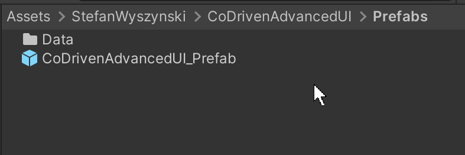
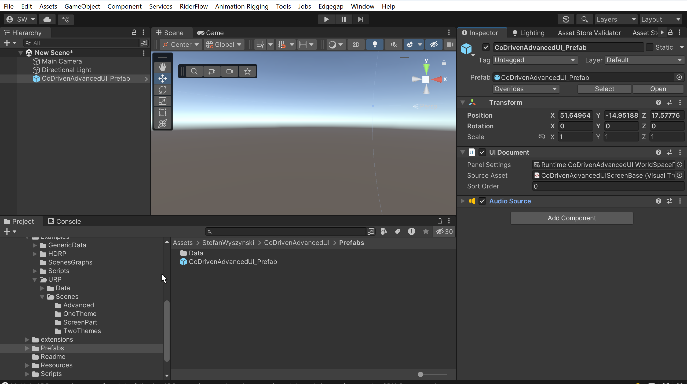
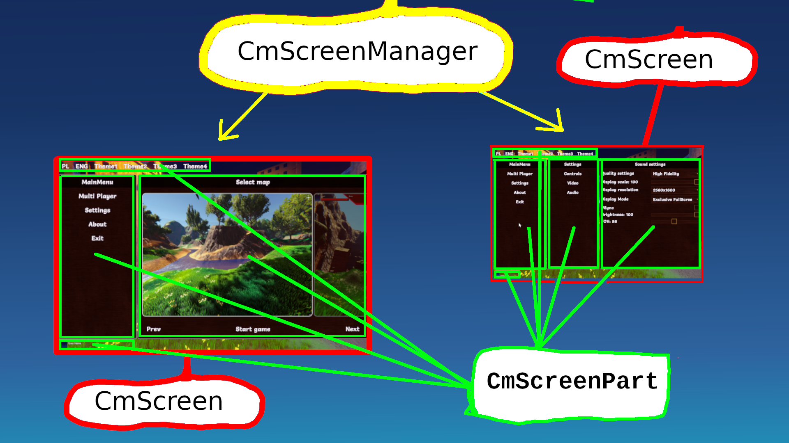
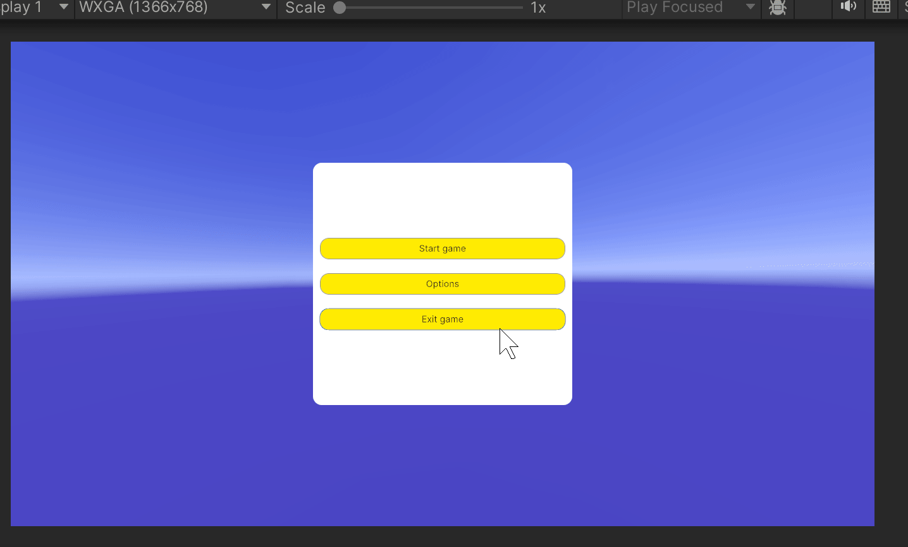
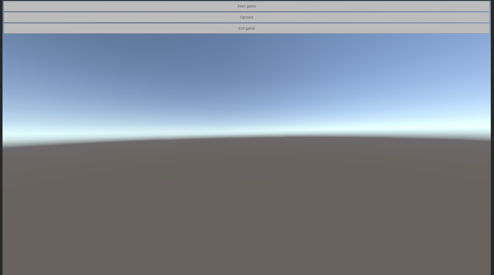

How to start
Create your first screen in empty scene
To create your first screen we need to add ui prefab.
Create your first empty screen.
Go to location from this folder from below screen:

prefab location: Assets\StefanWyszynski\CoDrivenAdvancedUI\Prefabs
drag this prefab to your scene hierarchy:

As you can see, there is similar to what you will do with UI Toolkit to start.
Prefab contains UI Document filled with default values:
- Panel Setting - section contains settings for your UI Toolkit screen.
- Source Asset - this is filled with empty UI Builder. Why do we need this?. Because CoDriven Advanced UI will build all screens on this empty UI Builder for you from your code. When you move to a different screen, then it will be cleared and filled again. So you will not create any controls like in UI Toolkit. We will not use uss code for styling your controls and will not add your controls manually in UI Builder. So it will be empty.
All your screens will be managed by CmScreenManager. We will add our implementation of screen manager to this prefab component, but for now we don't have any implementation.
CmScreenManager for all your screens:

It is time to create your CmScreenManager that will contain your screens, and you will move between them any time you want.
So let's add our CmScreenManager. Create a class in any folder called, for example, MyFirstScreenManager
public class MyFirstScreenManager : CmScreenManager<MyFirstTheme>
{
public override void OnBindUiEventsHandler(CmUIEventsHandler eventsHandler)
{
// here you can handle events from your screens if you want.
// for example button clicks or other
}
public override void OnAddSupportedScreens(List<CmScreen<MyFirstTheme>> supportedScreenList)
{
// here we will add our screens for this scene. For example settings, about, map select
}
public override void OnAddSupportedThemes(List<MyFirstTheme> themeBases)
{
// here we will add all our themes or just one theme if we will not add more
// usually we will add one theme.
}
public override void OnSetMainScreen()
{
// this is called on start. Here we set which screen is main by just moving to it
}
}
You will ask now what is MyFirstTheme?. This is our base class for themes.
If we have themes A, B, C., How will this tool know which theme to use and how many themes are for this screen manager?. It is simple, we just have to use the base theme for all our themes. In this example MyFirstTheme is our base.
So let's define it - create a class with the name MyFirstTheme
public abstract class MyFirstTheme: CmThemeBase
{
}
We don't have anything to style now, so it is empty, but if we want to style a button, we will add an abstract method here called styleButton.
This class is abstract, why?. Because we will add abstract methods to it, for example:
public abstract class MyFirstTheme: CmThemeBase
{
public abstract CmButtonModifiers StyleButton();
}
So abstract method for style button?. Why abstract?. Because we can implement it in child classes. This way we can create multiple themes. Change current theme runtime without knowing in the code which styling method implementation is used - this is polymorphism :).
It will look like this for two themes MyFirstThemeWhite and MyFirstThemeBlack
// white theme implementation
public class MyFirstThemeWhite: MyFirstTheme
{
public override CmButtonModifiers StyleButton() {
// here we would add styling for white button
}
public override string GetThemeName()
{
return "MyFirstThemeWhite";
}
}
// black theme implementation
public class MyFirstThemeBlack: MyFirstTheme
{
public override CmButtonModifiers StyleButton() {
// here we would add styling for black button
}
public override string GetThemeName()
{
return "MyFirstThemeBlack";
}
}
We have to implement and return the name of our theme in our theme implementations by overriding GetThemeName.
Ok, but we don't have two themes. This was an example. We will use one theme implementation, and we don't have any button to style, so first we will create an empty theme implementation
// white theme implementation
public class MyFirstThemeWhite: MyFirstTheme
{
public override string GetThemeName()
{
return "MyFirstThemeWhite";
}
}
We will letter add abstract methods to MyFirstTheme and implementations for them in MyFirstThemeWhite
Now we will add this theme to our screen manager.
Let's go back to screen manager and add our theme
public class MyFirstScreenManager : CmScreenManager<MyFirstTheme>
{
public override void OnBindUiEventsHandler(CmUIEventsHandler eventsHandler)
{
// here you can handle events from your screens if you want.
// for example button clicks or other
}
public override void OnAddSupportedScreens(List<CmScreen<MyFirstTheme>> supportedScreenList)
{
// here we will add our screens for this scene. For example settings, about, map select
}
public override void OnAddSupportedThemes(List<MyFirstTheme> themeBases)
{
// add our theme implementation (wchich is empty for now)
themeBases.Add(new MyFirstThemeWhite());
}
public override void OnSetMainScreen()
{
// this is called on start. Here we set which screen is main by just moving to it
}
}
Ok. Now we have to add our screens. We can have multiple screens. For example, the settings screen, the map select screen, the help screen, and other screens. Anything you want.
We will add them to the above screen manager in OnAddSupportedScreens the same way we added themes in OnAddSupportedThemes. This way screen manager will know which screens are supported for this screen manager. You will be able to move between them.
So let's add our empty CmScreen, we call it MyFirstMainMenuScreen
public class MyFirstMainMenuScreen : CmScreen<MyFirstTheme>
{
public MyFirstMainMenuScreen(CmScreenManager<MyFirstTheme> parent = null,
VisualElement root = null) : base(parent, root)
{
// this can be always empty
}
public override void BindUIEventsOnStart(CmUIEventsHandler eventsHandler)
{
// this method is the same as in your screen manager
// here you can handle events from your screen if you want.
// for example button clicks or other
}
public override void OnMakeScreenContent(ScreenContentBuilder contentBuilder)
{
// here we will create our controls and set styling for our controls using mthods from base theme (as you remember these methods are abstract so we don't know need to know which implementation is currently used)
}
public override string GetScreenName()
{
// Screen name is useful for further screen changing in game/menu. You will change screens using their names
return "MainMenu";
}
}
So we have screen but it is empty. We will create simple main menu screen - something like this:

But this is how it looks after styling our controls, but now we have no controls in our screen.
So let's add controls. I will give you the full code of our MyFirstMainMenuScreen and I will explain how it works.
public class MyFirstMainMenuScreen : CmScreen<MyFirstTheme>
{
public MyFirstMainMenuScreen(CmScreenManager<MyFirstTheme> parent,
VisualElement root = null) : base(parent, root)
{
// this can be always empty
}
public override void BindUIEventsOnStart(CmUIEventsHandler eventsHandler)
{
// we don't handle any on click events now so it will be empty
}
public override void OnMakeScreenContent(ScreenContentBuilder contentBuilder)
{
// here we add:
// 1. Main contanier for the whole screen. This is background
var mainContainer = new CmColumn(this);
mainContainer.SetStyle(GetTheme().MainContainer);
// now we add center panel with buttons to this mainContainer
AddCenterPanel(mainContainer);
// add whole content to
contentBuilder.AddContent(mainContainer);
}
private void AddCenterPanel(CmColumn mainContainer)
{
// create center panel
var centerPanel = new CmColumn(this);
centerPanel.SetStyle(GetTheme().MenuPanel);
// create 3 buttons and add them to center panel
centerPanel.AddContent(CreateButton("Start game", "Start"));
centerPanel.AddContent(CreateButton("Options", "Options"));
centerPanel.AddContent(CreateButton("Exit game", "Exit"));
// now we add center panel to main container
mainContainer.AddContent(centerPanel);
}
private CmButton CreateButton(string label, string name)
{
// create button
var cmButton = new CmButton(this, label, GetCmUiEventsHandler());
cmButton.SetStyle(GetTheme().MenuButton);
cmButton.SetName(name);
return cmButton;
}
public override string GetScreenName()
{
// Screen name is useful for further screen changing in game/menu. You will change screens using their names
return "MainMenu";
}
}
I think the code is self-explanatory but some regions may be difficult to understand.
As you can see we have used SetStyle() method 3 times for all controls
cmButton.SetStyle(GetTheme().MenuButton);
because without styles the screen would look like this:

But why?. Because we have added a container for background, and inside of it a container for buttons, and inside of it three buttons.
But these containers are columns. So controls are added in the columns way.
cmButton.SetStyle(GetTheme().MenuButton);
Above SetStyle() method will use the base theme interface that we have added at the beginning of the tutorial, but I have added some methods for styling
I will show you these styling methods in our theme, but now I will explain further.
IMPORTANT
As you can see - we didn't call GetTheme().MenuButton() method, but we pass pointer to it to SetStyle method.
CoDriven Advanced UI will generate uss code under the hood for all styling methods for all our themes. Then it will use your pointer to method to find uss assigned to this method and set style sheet of UI Toolkit to your control. So you don't have to worry about uss code, stylesheet and other related stuff :).
there is one more think to mention:
when we create control we pass:
var cmButton = new CmButton(this, label, GetCmUiEventsHandler());
- parent container,
- label that will be displayed on the button in UI
- GetCmUiEventsHandler() method. We pass event handler that will handle events from controls. By calling GetCmUiEventsHandler() on our screen we inform below button that this screen will handle events from this control. We haven't used events in this example, but I will show how to use it on the end of this introduction.
We have set the name of the control by SetName(). The name can be used to know, for example, which control was clicked. We can check if the clicked control has a specific name. I will show an example at the end of the tutorial.
Ok. Now I will show you the code for base theme abstract class MyFirstTheme and implementation of the theme MyFirstThemeWhite
public abstract class MyFirstTheme: CmThemeBase
{
public abstract ICmControlModifiers MainContainer();
public abstract ICmControlModifiers MenuPanel();
public abstract ICmControlModifiers MenuButton();
}
public class MyFirstThemeWhite: MyFirstTheme
{
public override string GetThemeName()
{
return "MyFirstThemeWhite";
}
// style for main container background
public override ICmControlModifiers MainContainer()
{
// each control has method GetModifiersBuilder() so you can build style and return
var modifiers = CmColumn.GetModifiersBuilder();
// I will explain this Column method under this code
modifiers.Column(new CmModifierColumn(CmSelector.DefaultState)
// set width and height to fullscreen (I could use weight() modifier)
.FillMaxWidth()
.FillMaxHeight()
// this is container called column and we want to add another panel to it and make it center
.VerticalArrangement(CmArrangement.CENTER)
.HorizontalAlignment(CmAlignment.CENTER)
// this is background color of this fullscren container. R G B A, so Blue color = 1 full blue, and alpha 0.5f
.BackgroundColorRGBA(new Color(0, 0, 1, 0.5f))
);
return modifiers;
}
// style center menu panel
public override ICmControlModifiers MenuPanel()
{
// each control has method GetModifiersBuilder() so you can build style and return
var modifiers = CmColumn.GetModifiersBuilder();
// I will explain this Column method under this code
modifiers.Column(new CmModifierColumn(CmSelector.DefaultState)
// this is center panel that will contain 3 buttons so make them center vertically when there will be added
.VerticalArrangement(CmArrangement.CENTER)
.BorderRadius(20.Px())
.Width(30.Percent()) // set wodth to 30 % of available space
.Height(50.Percent()) // set height to 50 % of available space
.BackgroundColorRGBA(Color.white)
);
return modifiers;
}
// style for each of three buttons of our implementation
public override ICmControlModifiers MenuButton()
{
// each control has method GetModifiersBuilder() so you can build style and return
var modifiers = CmButton.GetModifiersBuilder();
// I will explain this Button method under this code
modifiers.Button(
new CmModifierText(CmSelector.DefaultState)
// set width and height to auto
.WidthAuto()
.HeightAuto()
.BackgroundColorRGBA(Color.yellow)
.TextFontSize(20.Px())
.BorderWidth(1)
.BorderRadius(20.Px())
// set margin of 16 pixels around control
.MarginAll(16, 16, 16, 16)
// this is magic I will allow animation and make animation for 400 ms
// you will ask what animation?. Because below we add scaling and font to bold
// when mouse will hover over this button. So if we add animation then this state will be changed
// over time instead of instant change. It will slowly change state
.AnimEnable()
.AnimDuration(400)
// ok now we switch bulder to hover state. Now when we add modifiers we do it for new state
// which is hover state and all modifiers will now be to button when mouse will hover
.____NextSelector(CmSelector.Hover)
// scale button when mouse is hovering
.Scale(x: 1.05f, y: 1.4f)
// set font for text when mouse is hovering
.TextFontStyle(CmFontStyle.bold)
// and
.TextColorRGB(Color.red)
);
return modifiers;
}
}
What are modifiers?
Under the hood modifiers will replace your styling code that you have to add typically in uss code for UI Toolkit.
styling method MenuButton will automatically generate this uss code - but you don't have to know it, but I will show as an example:
.Method_2
{
width: auto;
height: auto;
background-color: rgba(255,235,4,1.00);
font-size: 20px;
border-width: 1px;
border-top-left-radius: 20px;
border-top-right-radius: 20px;
border-bottom-left-radius: 20px;
border-bottom-right-radius: 20px;
margin: 16px 16px 16px 16px;
transition-property: all;
transition-duration: 400ms;
}
.Method_2:hover
{
scale: 1.05 1.40;
-unity-font-style: bold;
color: rgb(255,0,0);
}
and style will be loaded in the background and assigned to your controls. The full uss code is larger for our theme, but I only showed uss code for our button.
You can add more themes by implementing our base theme class MyFirstTheme and adding it to the themes in our screen manager.
Read modifiers section of the documentation to understand it more.
I could finish now, but I will show one thing. How to handle click event on the buttons and change screen. We have one screen, but if you add more screens, then you can change the screen by just calling a simple method call.
public class MyFirstMainMenuScreen : CmScreen<MyFirstTheme>
{
.....
public override void BindUIEventsOnStart(CmUIEventsHandler eventsHandler)
{
eventsHandler.buttonClick = @base =>
{
if (@base.GetName().Equals("Start"))
{
SetCurrentScreen("your screen name");
}
if (@base.GetName().Equals("Exit"))
{
Application.Quit();
}
};
}
.....
}
This is our final screen. Read the documentation then you will know about event handling, modifiers, and other stuff. I will try record video tutorial as soon as posible.
Go to my discord and ask questions :D
https://discord.gg/XnjTwJBjqY
I will complete the documentation soon. I am trying to add more and more every day.